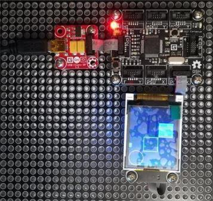

Version: 0.8.0
N18Display is connected as followed on Cerberus:

| N18Display | Mainboard |
|---|---|
| Socket Type S | Socket 5 |
Socket 6 seems to be problematic.
using System.Threading;
using Bauland.Gadgeteer;
using GHIElectronics.TinyCLR.Pins;
namespace TestN18Display
{
static class Program
{
static void Main()
{
DisplayN18 display = new DisplayN18(FEZCerberus.GpioPin.Socket5.Pin3, FEZCerberus.GpioPin.Socket5.Pin4,
FEZCerberus.GpioPin.Socket5.Pin5, FEZCerberus.SpiBus.Socket5, FEZCerberus.GpioPin.Socket5.Pin6);
display.TurnOn();
short i = 0;
while (true)
{
i++;
display.DrawText(50, 0, i.ToString("X"), Color.Green);
display.DrawCircle(20, 20, 20, Color.Red);
display.DrawRectangle(40, 40, 40, 40, Color.Cyan);
display.DrawFilledRectangle(80, 80, 40, 40, Color.Blue);
Thread.Sleep(500);
}
// ReSharper disable once FunctionNeverReturns
}
}
}